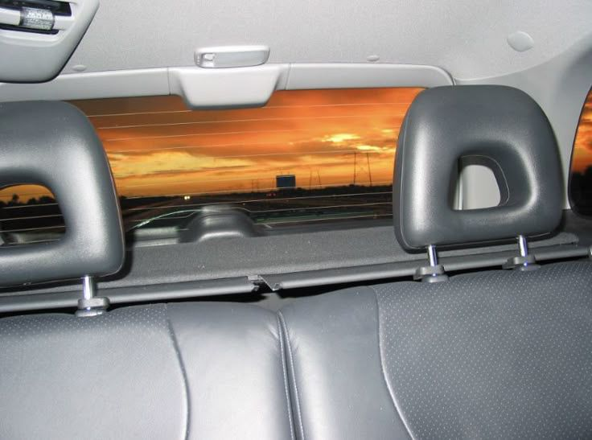

orange!!

i really like the color orange. fun fact the inside (and parts of the outside) of my house is a really bright orange from floor to ceiling. i used to be really annoyed by it but in recent years i've embraced it.

orange - big thief
orange is the color of my love
fragile orange wind in the garden
fragile means that i can hear her flesh
crying little rivers in her forearm
fragile is that i mourn her death
as our limbs are twisting in her bedroom
lies, lies, lies
lies in her eyes
lies, lies, lies
lies from her eyes
she tells me to close and count to ten
as she wanders freely through the forest
can i close and open once again?
the question that i seek for reassurance
lies, lies, lies
lies in her eyes
lies, lies, lies
lies in her eyes
hound dogs crowing at the stars above
pigeons fall like snowflakes at the borders
she kneels down and holds the frozen dove
the moon drips like water from her shoulder
flies, flies, flies
flies from her eyes
flies, flies, flies
flies from her eyes
orange is the color of my love
fragile orange wind in the garden
fragile means that i can hear her flesh
crying little rivers in her forearm
fragile is that i mourn her death
as our limbs are twisting in her bedroom
previous page
next page